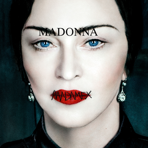
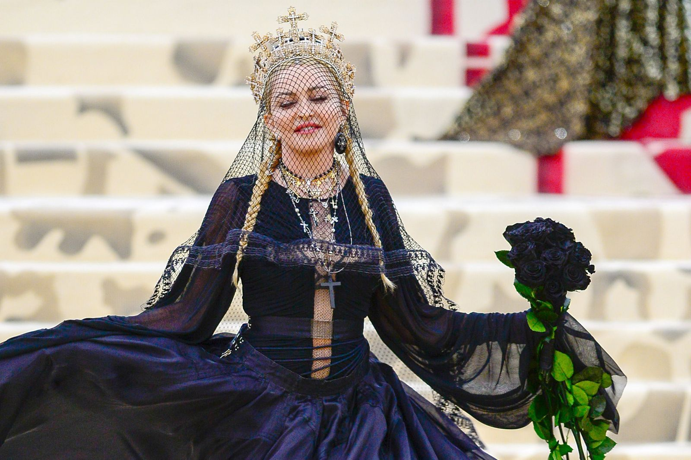

Madame X es el decimocuarto álbum de estudio de Madonna. Lanzado a la venta en 2019, sufrió de críticas negativas al igual que Hard Candy, MDNA y Rebel Heart. Además, comercialmente es su álbum menos vendido hasta la fecha y es el único álbum de la Reina del Pop que no ingresó un solo álbum al Billboard Hot 100 de E.E.U.U. Lo más cercano a un éxito que tuvo este álbum fue la canción "Medellín" en colaboración con Maluma, la cual debutó en Reino Unido en el puesto #87 y posteriormente se esfumó de los listados. Para este proyecto, Madonna se inspiró en el reggaetón y los géneros tradicionales de Portugal debido a la mudanza de Madonna a aquel país. El álbum debutó en el #1 del Billboard 200 de E.E.U.U. y sería su último álbum con Instercope Records antes de volver a Warner Music en 2026 con CONFESSIONS II.

Madonna en la MET Gala del 2018.